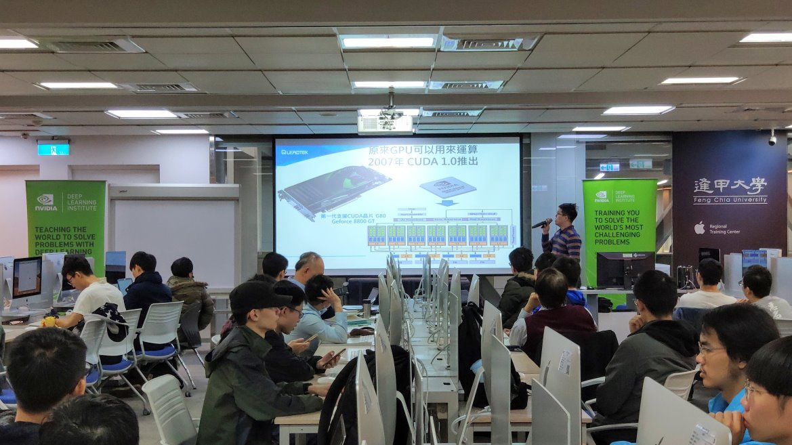

Department of FCU IECS
本校於民國 58 年率先報部奉准成立「電子計算機科學系」，71 年有鑑於時代演變的需要更名為「資訊工程學系」，73 年成立碩士班，82 年成立博士班，88 年設置碩士在職專班。88 年本系與電子工程、電機工程、自控工程與通訊工程等五個學系由「工學院」轉編成立「資訊電機學院」。目前本系大學部學生總共約八百餘人，畢業人數 9,900 人，校友在國內外均嶄露才華，表現極為優異。

Chick picture 
hello,world
Visit https://www.jw-albert.tw/ now!
More about IECS本校於民國 58 年率先報部奉准成立「電子計算機科學系」，71 年有鑑於時代演變的需要更名為「資訊工程學系」，73 年成立碩士班，82 年成立博士班，88 年設置碩士在職專班。88 年本系與電子工程、電機工程、自控工程與通訊工程等五個學系由「工學院」轉編成立「資訊電機學院」。目前本系大學部學生總共約八百餘人，畢業人數 9,900 人，校友在國內外均嶄露才華，表現極為優異。